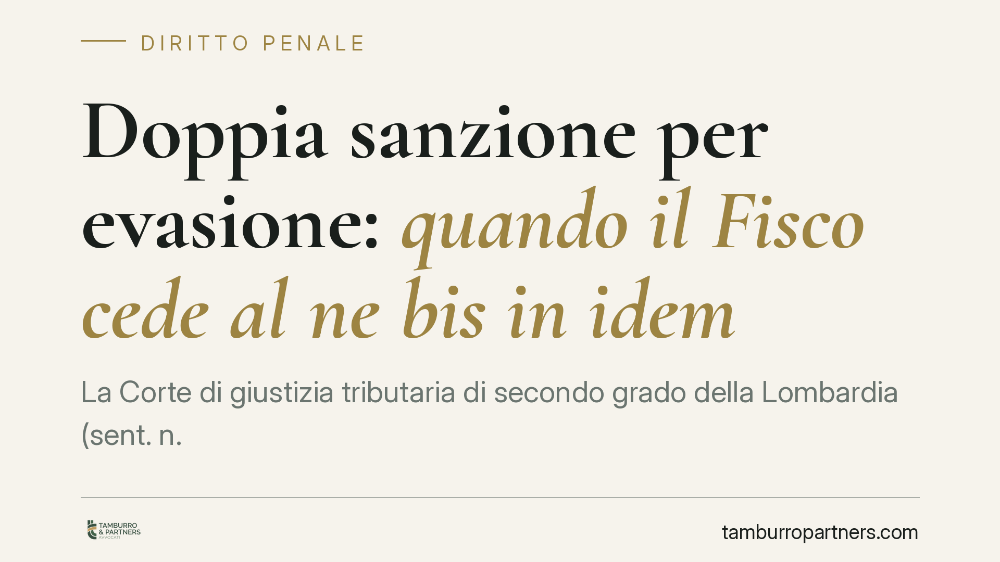

Doppia sanzione per evasione: quando il Fisco cede al ne bis in idem
La Corte di giustizia tributaria di secondo grado della Lombardia (sent. n. 1586/2026) ha annullato le sanzioni amministrative irrogate a un imprenditore già condannato in sede penale per frode fiscale. Il motivo: la punizione complessiva risultava sproporzionata. Restano però dovute imposte e interessi. Una decisione che riporta al centro il divieto di doppio giudizio per lo stesso fatto.

Il caso
Un imprenditore era già stato condannato in via definitiva in sede penale per frode fiscale, ai sensi del D.lgs. 74/2000. Sullo stesso identico fatto, l'Agenzia delle Entrate aveva irrogato le sanzioni amministrative tributarie, che si aggiungevano alla pena già scontata.
Il contribuente ha impugnato l'atto. La Corte di giustizia tributaria di secondo grado della Lombardia, con sentenza n. 1586/2026, gli ha dato ragione: ha annullato le sanzioni, ritenendo che la somma delle due risposte punitive — penale e amministrativa — superasse il limite della proporzionalità.
Attenzione a un punto decisivo: sono cadute solo le sanzioni. Imposte evase e interessi restano integralmente dovuti. Il principio tutela dalla doppia *punizione*, non dall'obbligo di pagare il tributo.
Inquadramento normativo
Il cardine è il principio del *ne bis in idem*, cioè il divieto di essere giudicati o puniti due volte per lo stesso fatto. Lo sancisce l'art. 4 del Protocollo n. 7 alla Convenzione europea dei diritti dell'uomo (CEDU).
Il nodo nasce perché, nel sistema italiano, lo stesso comportamento evasivo può attivare due binari: quello penale (D.lgs. 74/2000) e quello amministrativo-tributario (sanzioni dell'Agenzia). Sulla carta sono procedimenti distinti. Nella sostanza, però, anche la sanzione tributaria ha natura "sostanzialmente penale" quando è afflittiva e sproporzionata: così hanno chiarito la Corte di Strasburgo (caso *Grande Stevens* e seguenti) e la Corte di giustizia dell'Unione europea.
La giurisprudenza europea non vieta in assoluto il doppio binario. Lo ammette a precise condizioni: che i due procedimenti siano connessi in modo sufficientemente stretto nel tempo e nella sostanza, e — soprattutto — che la risposta sanzionatoria complessiva resti proporzionata. È proprio su questo test di proporzionalità che il giudice lombardo ha fondato l'annullamento.
Implicazioni pratiche
Per il contribuente — imprenditore, professionista o società — che si trova esposto su entrambi i fronti, la decisione apre un margine difensivo concreto, ma va letta con prudenza.
Primo: non è un'assoluzione dal debito. Il tributo e gli interessi restano. Chi legge il titolo come "non devo più nulla" commette un errore.
Secondo: l'annullamento non è automatico. Il giudice valuta caso per caso se la somma delle sanzioni abbia varcato la soglia della proporzionalità. Contano l'entità della pena penale già inflitta, l'importo delle sanzioni amministrative e l'identità del fatto.
Terzo: la tempistica processuale pesa. Il momento in cui i due procedimenti sono pendenti o conclusi incide sulla strategia difensiva. Una condanna penale già definitiva è un elemento diverso rispetto a un processo ancora in corso.
Quarto: si tratta di una pronuncia di merito di secondo grado, non di un orientamento consolidato della Cassazione. Va usata come argomento, non come certezza.
Cosa fare in concreto
- Verificate l'identità del fatto. Controllate che il fatto contestato in sede penale e quello sanzionato dal Fisco coincidano. Il *ne bis in idem* scatta solo sul medesimo fatto storico.
- Ricostruite la cronologia dei procedimenti. Raccogliete sentenza penale, atto di irrogazione delle sanzioni e date rilevanti: servono per valutare la connessione temporale richiesta dalla CEDU.
- Impugnate nei termini. Le sanzioni tributarie si contestano con ricorso entro i termini di decadenza. Non lasciate decorrere le scadenze confidando in orientamenti futuri.
- Separate imposte e sanzioni nella strategia. Impostate la difesa distinguendo ciò che resta dovuto (tributo e interessi) da ciò che può essere contestato (le sanzioni).
- Consigliamo una valutazione tecnica preliminare. Prima di qualsiasi mossa, fate esaminare la posizione da chi conosce sia il versante penale-tributario sia quello processuale tributario.
La sentenza conferma una direzione: il sistema non può punire due volte oltre misura lo stesso fatto. Ma il confine della "misura" si traccia nel singolo caso, documenti alla mano.
---
*Contributo informativo a cura di Tamburro & Partners - Avv. Giuseppe Tamburro. Non costituisce parere legale.*
Ogni condominio ha una storia a sé.
Se gestisci un'amministrazione e vuoi un confronto su una specifica questione condominiale, scrivi allo studio. Ti rispondiamo entro un giorno lavorativo.